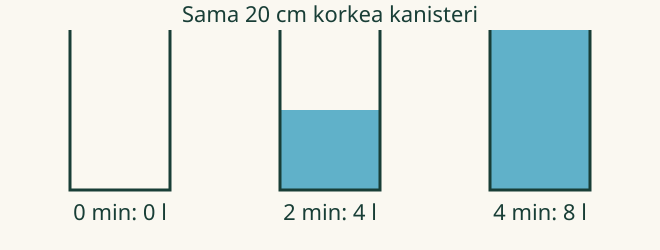

<link rel="stylesheet" href="frame.css">

<section data-teaching-step="1" data-lesson-role="teaching-step">
<p class="lesson-intro"> Loikka täyttää vesikanisteria. Aava kysyy: mikä muuttuu odottaessa ja mikä pysyy samana?</p>
<h2>Kun yksi suure muuttuu</h2>
<p><strong>Tavoite:</strong> tunnistan, miten kaksi suuretta liittyvät toisiinsa sovitussa tilanteessa.</p>
</section>


<section data-teaching-step="2" data-lesson-role="teaching-step">
<h3>1. Vettä tulee lisää</h3>
<p>Aluksi kanisteri on tyhjä. Hana antaa tasaisesti <strong>2 litraa minuutissa</strong>. Minuutin jälkeen vettä on 2 litraa, kahden minuutin jälkeen 4 litraa. Vesimäärä riippuu kuluneesta ajasta.</p>
<figure data-lesson-role="worked-example"></figure>
<p>Kanisterin <strong>oma korkeus</strong> on koko ajan 20 cm. Sen seinät eivät kasva, vaikka veden pinta nousee. Kanisterin korkeus ei tässä riipu täyttöajasta.</p>
</section>


<section data-teaching-step="3" data-lesson-role="teaching-step">
<h3>2. Riippuvuus voi myös pienentää</h3>
<p>Avataan tyhjennyshana. Aluksi kanisterissa on 8 litraa vettä. Ulos virtaa tässä mallissa tasaisesti 2 litraa minuutissa: 8, 6, 4, 2, 0 litraa. Vesimäärä riippuu taas ajasta, vaikka se <strong>vähenee</strong>.</p>
</section>


<section data-teaching-step="4" data-lesson-role="teaching-step">
<p data-lesson-role="question"><strong>Ennusta:</strong> kun tyhjennysaika kasvaa yhdestä kahteen minuuttiin, kasvaako vesimääräkin?</p>
<details data-lesson-role="answer"><summary>Katso ajatus</summary><p>Ei. Se vähenee 6 litrasta 4 litraan. Riippuvuus ei tarkoita, että molemmat luvut aina kasvavat.</p></details>
</section>


<section data-teaching-step="5" data-lesson-role="teaching-step">
<h2>Kokeile yhtä muutosta kerrallaan</h2>
<p>Valitse täyttö tai tyhjennys. Muuta aikaa ja vertaa vesimäärää kanisterin korkeuteen. Luvut ja kuva näyttävät saman mallin.</p>
<div data-depend-lab><p>Ilman JavaScriptiä vertaa yllä olevia aikoja ja määriä. Voit myös lisätä samaan astiaan saman määrän vettä toistuvasti ja kirjata havainnot aikuisen kanssa.</p></div>
<details data-lesson-role="teaching-step"><summary>Kuvamallin nopeus ja rajat</summary><p>Tämä on nopeutettu kuvamalli: yksi toiston sekunti vastaa yhtä mallin minuuttia. Tarkastellaan vain aikaa 0–4 min; 8 litran kanisteri ei voi täyttyä tämän yli. Tyhjennysvirta on mallissa vakio, oikeassa astiassa se voi muuttua.</p></details>
</section>


<section data-teaching-step="6" data-lesson-role="teaching-step">
<h3>Uusi tilanne: liput retkelle</h3>
<p>Aava ostaa lippuja. Yhteiseen tilaukseen kuuluu 3 euron tilausmaksu ja jokainen lippu maksaa 2 euroa. Yksi lippu maksaa yhteensä 5 euroa, kaksi 7 euroa ja kolme 9 euroa.</p>
<p>Hinta riippuu lippujen määrästä. Kun lippuja tulee yksi lisää, hinta kasvaa 2 euroa. Hinta ei silti ole pelkkä lippujen määrä kertaa kaksi: myös alun 3 euroa kuuluu mukaan.</p>
<details data-lesson-role="hint"><summary>Apua</summary><p>Nimeä ensin, mitä muutat: tässä aikaa. Valitse sitten yksi seurattava suure. Katso sen arvoa kahdessa eri ajankohdassa. Pidä sama kanisteri ja sama virtaussääntö. Tarvittaessa lue litrat suoraan näytöstä; kertolaskun nopeus ei ole harjoituksen tavoite.</p></details>
</section>


<section data-teaching-step="7" data-lesson-role="teaching-step">
<details data-lesson-role="teaching-step"><summary>Lisäpohdinta</summary><p>Hana antaa vettä 2 minuuttia, suljetaan minuutiksi ja avataan uudelleen. Vesimäärä pysyy tauolla samana, mutta koko tapahtuman aikana sen arvo silti liittyy aikaan ja hanan ennalta sovittuun ohjelmaan. Yksi muuttumaton väli ei todista, ettei mitään riippuvuutta olisi. Kuvaile ensin ohjelma ja rajaa tarkasteltava aika.</p></details>
</section>

<details data-lesson-role="teacher-note"><summary>Opettajalle ja ilman ruutua</summary><p>Vuosiluokat 7–9. Vahvat tuet M79-VAR-01 ja M79-LOGIC-01 eivät ole kanonisia pakollisia portteja. Ajan, litran ja pituuden merkitykset sekä pienten lukujen lukeminen oletetaan tai tuetaan. Tässä ei edellytetä funktion merkintöjä eikä koordinaatiston lukemista.</p><p>Konkreettinen vaihtoehto: samanmittaiset lisäykset mitta-astiaan. Mittaa tilavuus lisäyksen jälkeen. Oikea koe voi poiketa ideaalista vakiovirtauksesta. Ruutumallin käyttö ei osoita mittaus- tai tutkimusmenetelmien osaamista.</p><p>Riippuvuus kuvataan tässä annetun mallin sisäisenä yhteytenä. Kahden havaitun suureen yhtäaikainen muuttuminen ei yksin todista syy-yhteyttä. Pelkkä yksi arvopari ei määrää riippuvuuden yleistä sääntöä. Palautetta saadaan suunnasta ja muuttumattomasta vertailusuureesta, ei yleisen funktio-, kaava- tai laskutaidon hyväksyntää. Vastauksia ei tallenneta.</p></details>

<section data-teaching-step="8" data-lesson-role="teaching-step">
<p data-lesson-role="question"><strong>Lähtökysymys:</strong> nimeä lipputilauksesta muuttuva suure ja toinen siitä riippuva suure. Miten perustelisit yhteyden? Entä miksi kanisterin oma korkeus ei muuttunut täytössä?</p>
</section>

